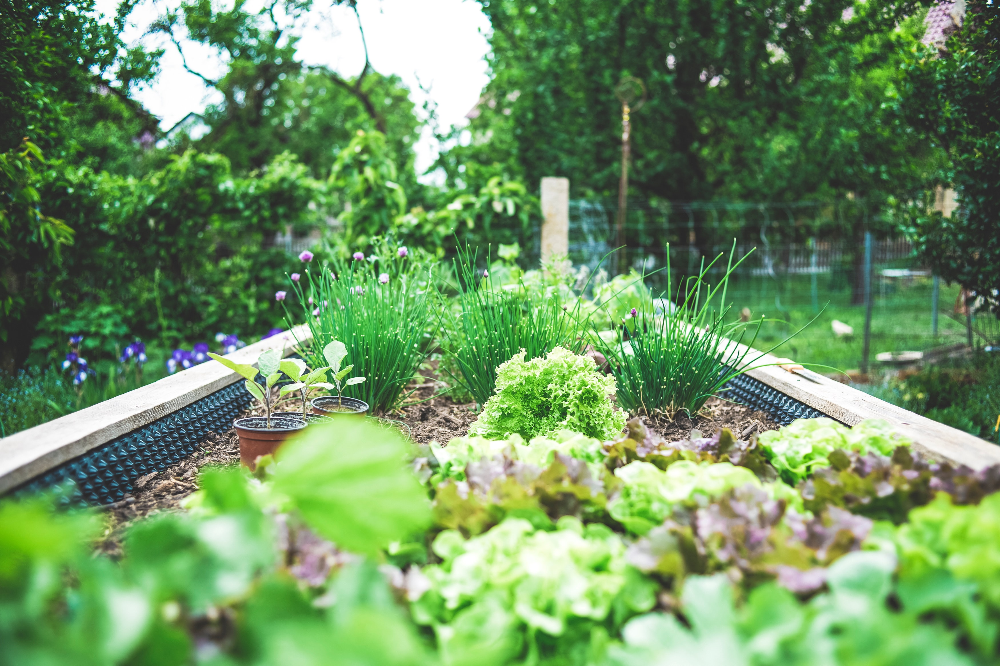

Grønne drømme
Velkommen til vores website for haveentusiaster.

Siden indeholder informationer om planter, der kan dyrkes i danske haver - både grøntsager, krydderurter, blomster og træer. Det primære fokus ligger dog på spiselige planter.
Vi brænder for at være selvforsynende og håber, at vi kan inspirere andre til at gå i samme retning - det påvirker både din families sundhed og vores alles klima i en positiv retning.
Plantedatabasen
Vores plantedatabase vokser dag for dag og indeholder al den information, som du har brug for, hvis du vil dyrke dine egne planter.
Hvis du mangler informationer om en plante, opdager forkerte informationer eller mangler en plante, er du velkommen til at skrive til os på info@gronnedromme.dk.
Har du lyst til at bidrage med at tilføje planter i plantedatabasen, hører vi meget gerne fra dig. Vi kan altid bruge flere grønne fingre på tastaturer, så databasen efterhånden bliver fyldt mere og mere op.

↓ Nyeste planter i databasen ↓
↑ TRYK FOR AT SE INFO ↑